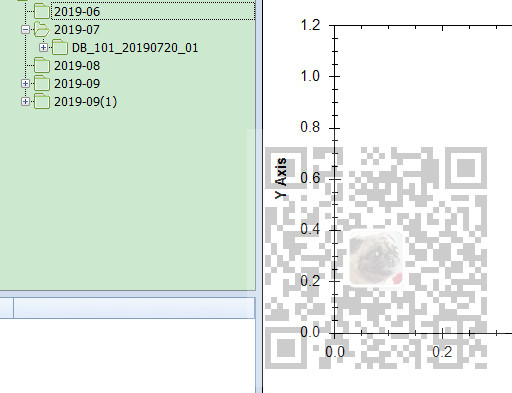

Winform控件-DevExpress18下载安装注册以及在VS中使用：
https://blog.csdn.net/BADAO_LIUMANG_QIZHI/article/details/100061243
DevExpress的TreeList怎样设置数据源，从实例入手：
https://blog.csdn.net/BADAO_LIUMANG_QIZHI/article/details/102548490
在上面实现简单的TreeList并设置数据源，显示效果仍然不是想要的树形结构的效果。
如果想实现如下这样效果，还需要进行进一步的属性设置。

注：
博客主页：
https://blog.csdn.net/badao_liumang_qizhi
关注公众号
霸道的程序猿
获取编程相关电子书、教程推送与免费下载。
/// 为树控件设置数据源
/// </summary>
/// <param name="treeList">树控件</param>
/// <param name="data">数据对象</param>
/// <param name="fieldName">显示的字段</param>
/// <param name="keyFieldName">键字段</param>
/// <param name="parentFieldName">父级键字段</param>
public static void SetTreeListDataSource(DevExpress.XtraTreeList.TreeList treeList, List<DataTreeNode> data, string fieldName, string keyFieldName, string parentFieldName)
{
#region 设置节点图标
System.Windows.Forms.ImageList imgList = new System.Windows.Forms.ImageList();
imgList.Images.AddRange(imgs);
treeList.SelectImageList = imgList;
//目录展开
treeList.AfterExpand -= treeList_AfterExpand;
treeList.AfterExpand += treeList_AfterExpand;
//目录折叠
treeList.AfterCollapse -= treeList_AfterCollapse;
treeList.AfterCollapse += treeList_AfterCollapse;
//数据节点单击，开启整行选中
treeList.MouseClick -= treeList_MouseClick;
treeList.MouseClick += treeList_MouseClick;
//数据节点双击选中
treeList.MouseDoubleClick -= treeList_MouseDoubleClick;
treeList.MouseDoubleClick += treeList_MouseDoubleClick;
//焦点离开事件
treeList.LostFocus -= treeList_LostFocus;
treeList.LostFocus += treeList_LostFocus;
#endregion
#region 设置列头、节点指示器面板、表格线样式
treeList.OptionsView.ShowColumns = false; //隐藏列标头
treeList.OptionsView.ShowIndicator = false; //隐藏节点指示器面板
treeList.OptionsView.ShowHorzLines = false; //隐藏水平表格线
treeList.OptionsView.ShowVertLines = false; //隐藏垂直表格线
treeList.OptionsView.ShowIndentAsRowStyle = false;
#endregion
#region 初始禁用单元格选中，禁用整行选中
treeList.OptionsView.ShowFocusedFrame = true; //设置显示焦点框
treeList.OptionsSelection.EnableAppearanceFocusedCell = false; //禁用单元格选中
treeList.OptionsSelection.EnableAppearanceFocusedRow = false; //禁用正行选中
//treeList.Appearance.FocusedRow.BackColor = System.Drawing.Color.Red; //设置焦点行背景色
#endregion
#region 设置TreeList的展开折叠按钮样式和树线样式
treeList.OptionsView.ShowButtons = true; //显示展开折叠按钮
treeList.LookAndFeel.UseDefaultLookAndFeel = false; //禁用默认外观与感觉
treeList.LookAndFeel.UseWindowsXPTheme = true; //使用WindowsXP主题
treeList.TreeLineStyle = DevExpress.XtraTreeList.LineStyle.Percent50; //设置树线的样式
#endregion
#region 添加单列
DevExpress.XtraTreeList.Columns.TreeListColumn colNode = new DevExpress.XtraTreeList.Columns.TreeListColumn();
colNode.Name = String.Format("col{0}", fieldName);
colNode.Caption = fieldName;
colNode.FieldName = fieldName;
colNode.VisibleIndex = 0;
colNode.Visible = true;
colNode.OptionsColumn.AllowEdit = false; //是否允许编辑
colNode.OptionsColumn.AllowMove = false; //是否允许移动
colNode.OptionsColumn.AllowMoveToCustomizationForm = false; //是否允许移动至自定义窗体
colNode.OptionsColumn.AllowSort = false; //是否允许排序
colNode.OptionsColumn.FixedWidth = false; //是否固定列宽
colNode.OptionsColumn.ReadOnly = true; //是否只读
colNode.OptionsColumn.ShowInCustomizationForm = true; //移除列后是否允许在自定义窗体中显示
treeList.Columns.Clear();
treeList.Columns.AddRange(new DevExpress.XtraTreeList.Columns.TreeListColumn[] { colNode });
#endregion
#region 绑定数据源
treeList.KeyFieldName = keyFieldName;
treeList.ParentFieldName = parentFieldName;
treeList.DataSource = data;
treeList.RefreshDataSource();
#endregion
#region 初始化图标
SetNodeImageIndex(treeList.Nodes.FirstOrDefault());
#endregion
}